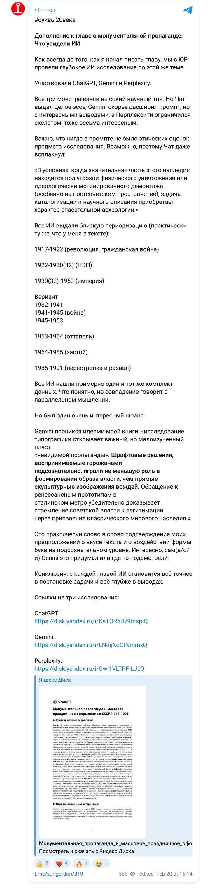
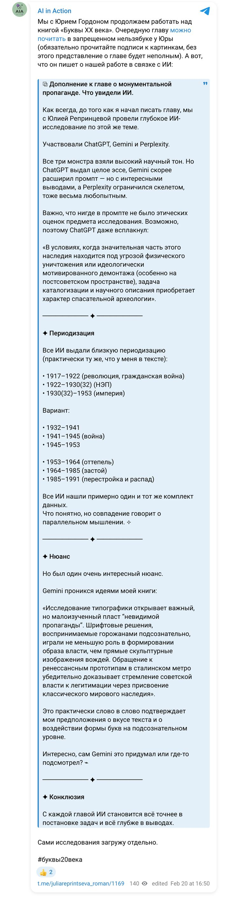

The book “Letters of the 20th Century” · February 2026 · research 06
Trace the evolution of monumental propaganda — parade décor, demonstrations, permanent structures — from 1917 to 1991: ideology, slogans, typography, materials; gather maximum visual material.
One working day: 11:55 the task → 12:05 a framework in Perplexity → 12:10 the brief in the prompt-building project → 13:00 Gemini’s report → 14:01 the final document and PDF. Three systems, three reports.
Perplexity, ChatGPT Deep Research, Gemini Deep Research
Below are the briefs the models received, the finished reports in PDF and the documents, as well as the publications made along the way.
Briefs
My document · working project document · 5 February 2026
Topic: Monumental propaganda and mass festive decoration in the USSR (1917–1991) — visual media, typography, slogans, materials, bodies of sources.
You are a researcher of Soviet visual culture and an archival analyst. Your goal is to collect, verify and systematise the maximum of visual sources (photos, diagrams, publications, spreads, catalogues), not to retell general knowledge. Work as the author of a scholarly catalogue and a research dossier.
A) Executive summary (1–1.5 pages): what was found, how it is useful, which hubs are strongest for a further corpus on type.
B) Periodisation with characteristics (in detail): for each period, 6 blocks:
C) Map of visual source corpora (catalogue): For each corpus: name, years/coverage, type of material, what exactly to look for there, strengths/limitations, link.
D) Catalogue of cards (the main body): Each card in the same format:
E) Appendix: “how to finish gathering the visuals” A step-by-step plan: from the basic collections → to names/place names → to regional archives → to museum digital collections → to journals/series.
Results
Project document · 5 February 2026
Study the evolution of monumental propaganda (the decoration of public events: parades, demonstrations, rallies), as well as permanent propaganda structures from 1917 to 1991. Trace how the ideology, slogans, typography and the materials from which the objects of monumental propaganda were made changed. Gather the maximum of visual material on the topic.
For a topic like this it is better to build a research “framework” straight away: a periodisation, types of objects and the key corpora of visual sources.
Festive decoration: “Agitational Mass Art. Festival Decoration. Materials and Documents. 1917–1932” (1984; imwerden, tehne, Google Books); materials on 1 May and 7 November 1918; russiainphoto.ru (for example, the decoration of the Obvodny Canal for 1 May 1932, “Capitalism in the grip of crisis”); “Museum Moscow Online”; regional retro communities (Sevastopol).
Permanent objects: overviews of Lenin’s plan (moscowsteps, ussr.totalarch); “The Many Faces of Soviet Monumental Art” (mienskurban.space); mosaic corpora (kathmanduandbeyond, comradegallery); the journal “Decorative Art of the USSR” (1957–1991, tehne); studies of the metro.
Ideology and slogans: kuznetsov.ucoz, “Ideology, Propaganda and Agitation in the USSR”; magazines.gorky.media, “The Soviet Festival of the 1920s in Search of Masses and Spectacle”.
| Period | Ideological themes | Slogans | Typography | Materials |
|---|---|---|---|---|
| 1917–1922 | Revolution, civil war | Imperatives: “Down with…”, “Long live…” | Handwritten, crude, experimental grotesques | Canvas, plywood, boards, plaster, fabrics |
| 1920–1932 | New world, literacy campaign, industrialisation | Metaphorical formulas, playful agitation | Constructivist grotesques, diagonals | Boards, wood, painted façades, banners |
| Late 1930s–1953 | Stalin, the Motherland, Victory, heroic labour | “Stalin is the banner…”, “Glory to…”, wartime | Standardised typefaces, capital inscriptions in stone | Stone, granite, bronze, majolica, mosaics |
| 1950s–1960s | Peace, friendship of peoples, the Virgin Lands | “Peace! Labour! May!”, “For peace throughout the world!” | Functional grotesques, factory-made letters | Fabric banners, enamel plaques, reliefs |
| 1970s–1980s | Space, science, sport, “tomorrow” | Descriptive slogans about progress | Large geometric letters, illuminated letters, text in panels | Smalt, ceramics, concrete, aluminium, glass, neon |
“If needed, as a next step I can help draw up a more formal brief in the style of your previous research (on typefaces, shop signs, etc.) — with an exact list of collections, queries for archives and a scheme for cataloguing the images” — which is what was done at 12:10.
Publications
Yuri Gordon and I — about this work in our own channels (in Russian). Each post links to the original.

